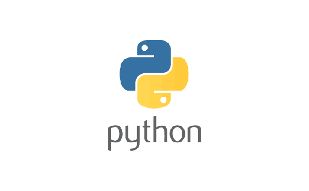
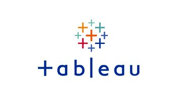
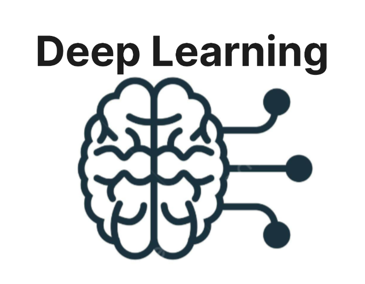
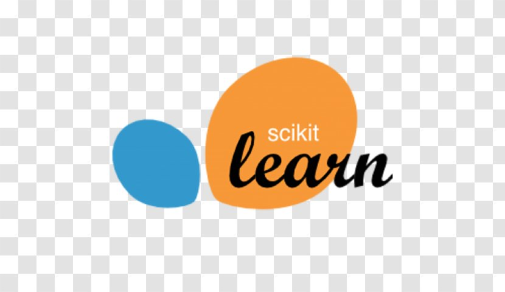

Builder · Researcher · Founder
Designing intelligent systems at the intersection of
AI, health infrastructure, and data science.
About
I'm an applied AI systems builder and researcher focused on health infrastructure and data science. My work spans machine learning, predictive modeling, and the design of intelligent data systems that translate complex data into real-world clinical impact.
Currently pursuing a Doctorate in Business Administration with research focused on healthcare AI governance, alongside an MS at the University of San Francisco to strengthen my quantitative foundation. I bring 5+ years of experience turning data into strategic decisions — and I'm now focused on building the infrastructure layer for next-generation health systems.
Innovation & Ventures
Applied AI infrastructure and creative ventures designed for scale and impact.
Founder & CEO
A patient-centered AI health infrastructure platform that structures longitudinal health data, generates predictive insights, and enables secure data sharing between patients, hospitals, and pharmacies. Built with Firebase, AI inference pipelines, and change-detection systems for tracking health deltas over time.
Founder
Developing an AI-powered wearable microscopy system for hands-free smart diagnostics and real-time pathogen detection. Targeting resource-constrained clinical environments.
Founder & Artist (BadboiHY)
An independent music label focused on publishing and digital marketing for emerging talent. Pioneering "Afrotrap" — a genre fusion of Afro and trap sounds.
Research
Focused on patient-centered data architectures, AI governance, and implementation frameworks for emerging markets.
Explores structured patient data architectures and interoperability frameworks designed to improve continuity of care in fragmented healthcare systems across emerging and underserved markets.
Proposes governance frameworks addressing trust, consent, and AI accountability in patient-centered digital health ecosystems, with a focus on emerging markets and ethical deployment considerations.
Third paper in the series, exploring practical implementation strategies and system design patterns for deploying AI-driven health platforms in real-world clinical environments.
Selected Work
Global demographic analysis in R exploring the relationship between life expectancy and fertility rates. Uncovered key population health insights across nations and time periods.
Portfolio optimization using the Fama-French multi-factor model in R. Maximized risk-adjusted returns through mean-variance analysis and factor exposure management.




Contact
Whether it's research collaboration, venture opportunities, speaking engagements, or consulting — I'd love to hear from you.